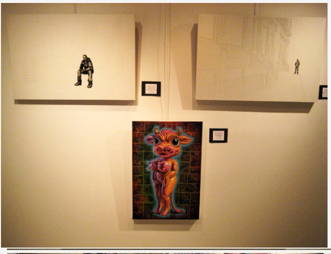
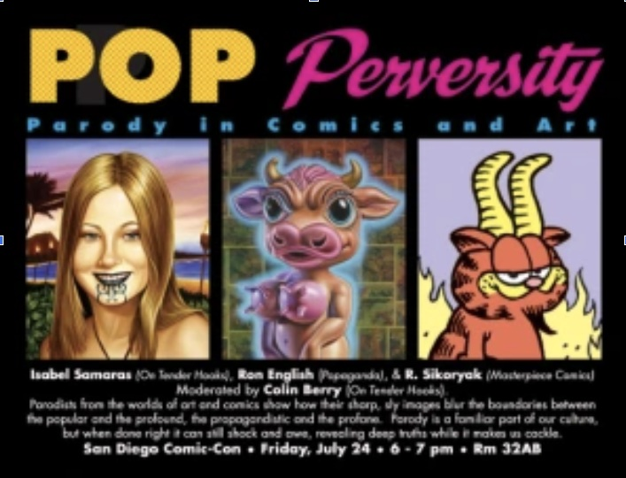

Exhibitions
Nimbus Vapor, curated by Ron English, Opera Gallery, New York, New York, US, opened October 1, 2009.
Dum English Exhibition, Opera Gallery, New York, New York, US, June 11, 2012.
Literature
Ron English, Ron English’s Stickable Art Offenses: A Sticker Book, designed by Randy Johnson (San Francisco: Last Gasp, 2011), 100 pp. ISBN 978-0867197594.
Notes
The composition was reproduced on the show card for Pop Perversity: Parody in Comics and Art.
Ancillary Documentation

